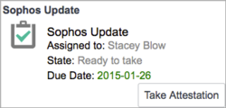
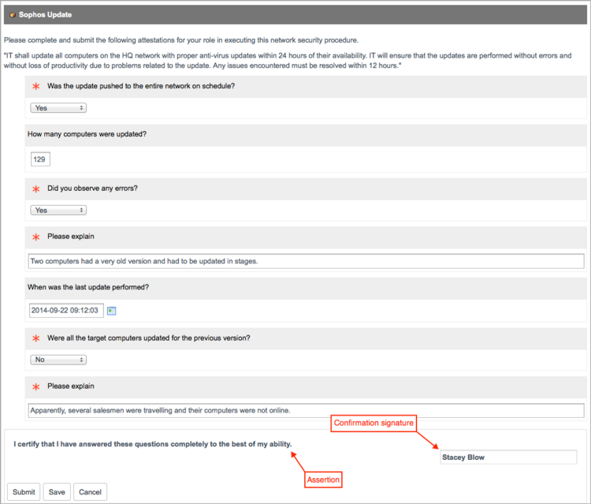
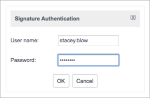
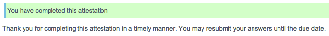
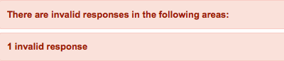
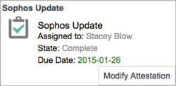

Completing an Attestation
1 Overview
All attestations assigned to you appear in your personal queue in Self-Service > My Assessments & Surveys. No special role is required to complete an attestation, but you must be logged in and the attestation must be assigned to you.
2 Notifications
If configured to send email, the system sends you a notification when the attestation is assigned to you. This notification displays the attestation due date and is sent immediately to your email address. The system sends another notification when half the time until the due date has elapsed.
3 Submitting an Attestation
The mandatory True/False questions on an attestation have a correct answer. If you answer one of these questions incorrectly, another field appears, asking for an explanation. This field is optional, but should be used to explain any unexpected results. By default, you cannot modify the answers to an attestation after submitting it. However, some attestations might be configured for modification, allowing you to edit your answers and resubmit the questionnaire. Completed attestations configured for retake remain in the queue until their due date and display the Modify Attestation button on the card. The ability to resubmit attestations is available starting with the Fuji release.
- Navigate to Self-Service > My Assessments & Surveys.
- Your page shows a card for the attestation.
- 
- Click Take Attestation.
- The attestation appears, with the mandatory questions marked in red.
- Answer the questions, including the dependent questions for the mandatory attestations.
- In this example, the user answered two questions incorrectly, causing the explanation field to appear.
- 
- Read any assertions present at the end of the questionnaire. If a signature is required, the system displays your name in a read-only field.
- Save or submit the attestation.
- Save: Saves your responses without submitting them. You can close the attestation and access it later from your queue. No signature or verification is required.
- Submit: Submits the completed attestation when you are finished.
- If prompted, enter your user name and password to verify your full name signature.
- You cannot submit your answers to the attestation until you provide the required signature.
- 
- If all the mandatory questions are answered with valid values, a success message appears.
- 
- If the system detects an unanswered mandatory question or invalid response, the attestation is not submitted, and a message appears at the top of the questionnaire explaining the error. Problematic questions are highlighted.
- 
- To edit your answers and resubmit an attestation that permits retakes, click Modify Attestation.
- You can modify your responses to the attestation until its due date.
- 
{kind=link}
{kind=link}
{kind=link}
{kind=link}
{kind=link}
{kind=link}